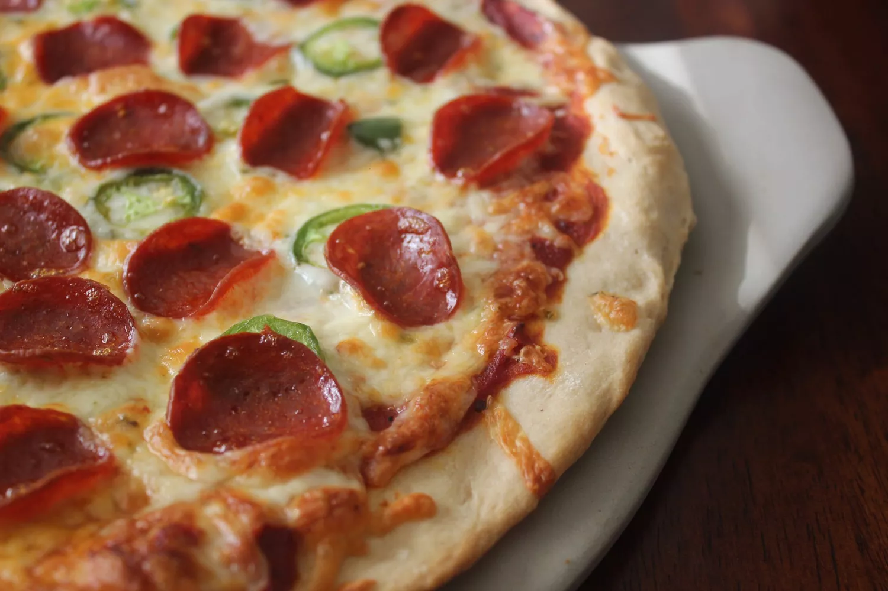

Pizza
Home

Description
If you're looking for a homemade pizza crust recipe that's great for
beginners, you're in luck. This top-rated recipe is super easy to throw
together on a whim - and it puts the store-bought stuff to shame. Learn
how to make the best pizza crust of your life with just a few ingredients,
find out how to shape the dough, and get our best storage secrets.
Ingredients
- Yeast
- Sugar
- Bread Flour
- Olive Oil
- Salt
- After you're finished mixing the ingredients, allow your dough to rest on
the counter for about 5 minutes. This will allow the gluten to relax,
making the dough much easier to stretch and shape.
-
You might feel inclined to prep your workspace with a big handful of
flour to prevent sticking. This is a helpful step with many kinds of dough.
However, in this case, too much flour can make your pizza crust tough.
Instead, rub your surface (and your hands) with a few tablespoons of
olive oil and maybe a little bit of flour. This will prevent sticking,
encourage a crispy texture, and ensure a gorgeous golden color.
-
You have a few options when it comes to shaping the dough. Stretch it in
the air, use a rolling pin, or pat it with your hands. No matter which
method you choose, make sure not to overwork the dough. Working it
too much will create a tough texture. When you're done, you should
have an even circle that's about 10 to 12 inches wide and about ⅓-inch
thick. If you get too thin, the crust may not be able to support the sauce and
toppings.